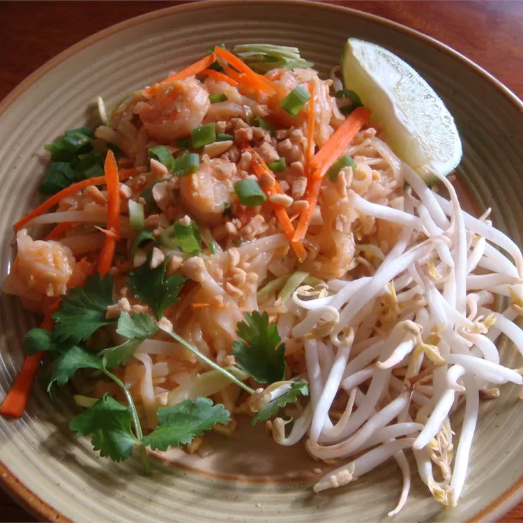

Pad Thai

Description: Pad Thai is a Thai dish of stir-fried rice noodles, eggs,
vegetables, and protein in a sweet, sour, and salty sauce.
Ingrediant
- White Suger
- Distilled white vinegar
- Soy sauce
- Tamarind pulp
- Dried rice noodles
- vegetable oil
- Minced garlic
- Egg
- Firm tofu
- White Sugar
- Salt
- Ground peanuts
- Radish
- Chives
- Paprika
- Bean Sprouts
- Lime
Steps
- To prepare pad thai sauce: In a medium saucepan over medium heat, blend sugar, vinegar, soy sauce, and tamarind pulp.
- To make pad thai: Soak rice noodles in cold water until soft; drain. In a large skillet or wok over medium heat, warm
oil and add garlic and eggs; scramble eggs. Add tofu and stir until well mixed; add noodles and stir until cooked.
- Stir in pad thai sauce, 1 1/2 tablespoons sugar, and 1 1/2 teaspoons salt. Stir in peanuts and ground radish. Remove from heat and add chives and paprika.
- Serve with lime and bean sprouts on the side.